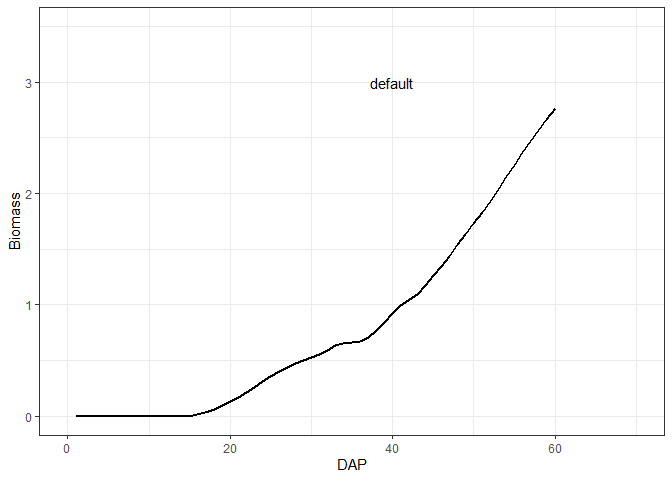
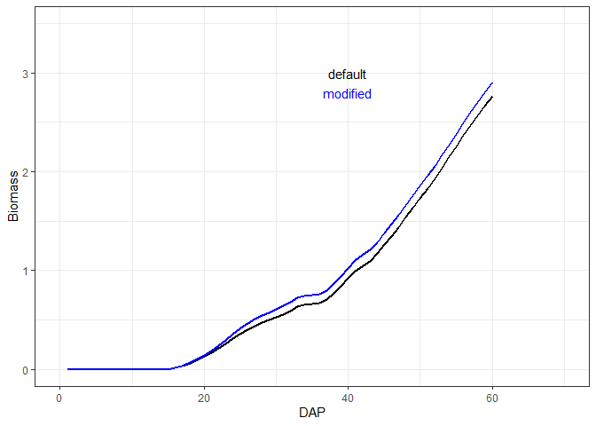
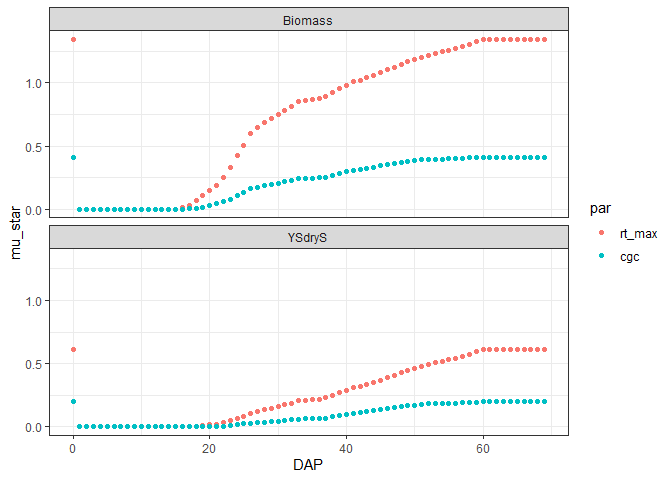
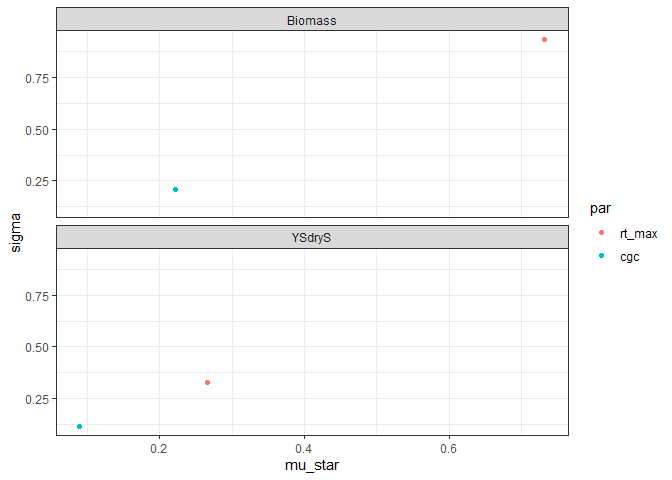

The goal of AquacropOnR is to make AquaCrop simulations from within R as easy as possible. The package has currently been tested with the AquaCrop standalone version 7.0 on Windows. The most recent version can be downloaded from the FAO website.
Installation and setup
First install git. Then you can install the development version of AquacropOnR using the devtools package:
library(devtools)
devtools::install_git(url = "https://github.com/tdeswaef/aquacroponr.git", force = TRUE)The installation of the AquaCrop standalone version is required.
Example
This is a basic example to run AquaCrop from R for the spinach crop.
Importantly, the working directory should be set to the folder in which the aquacrop.exe file is located.
With the package comes an example list with default crop parameters for quinoa and spinach. To make this list for your own crop, you need an AquaCrop cropfile (YourCrop.CRO) whose path should be input in the read_CRO() function:
yourcrop <- read_CRO("path/YourCrop.CRO")` Once you have the list with default crop parameter values, you can design the scenario’s for which you want to run AquaCrop. The AquacropOnR package provides a function to design the scenario’s: design_scenario(). The arguments in this function have the following meaning:
-
nameis a character vector of names for the scenario’s. -
Input_Dateis a Date vector that indicates the start point of the meteo files (Plu,Tnx,ETo)
-
Plant_Dateis a Date vector that defines the planting date in each scenario
-
IRRIis a character vector of the names of the irrigation scenario’s present in theIDcolumn of theIRRI_stibble.
-
Soilis a character vector of the names of the soils present in theIDcolumn of theSOL_stibble. -
Plu,Tnx, andEToare character (vectors) that refer to the names ofRobjects, that hold the daily data for precipitation, temperature and reference evapotranspiration, respectively.
IMPORTANT:
- The Scenario_s tibble must be named
Scenario_sand must have the columns (variables)Scenario,Input_Date,Plant_Date,IRRI,SoilandMeteo.
- The irrigation tibble must be named
IRRI_sand must have the columnsID,Timing,DepthandECw. Values of theIDcolumn are given as input to theIRRIargument in thedesign_scenario()function.
- The soil tibble must be named
SOL_sand must have the columnsID,Horizon,Thickness,SAT,FC,WP,Ksat,PenetrabilityandGravel. Values of theIDcolumn are given as input to theSoilargument in thedesign_scenario()function.
- The precipitation tibble can be named as you want, but its name is the input to the
Pluargument in thedesign_scenario()function. This tibble must have the columnsDAYandPLU. The first value ofDAYshould be1, and its date should correspond to the value of theInput_Dateargument in theScenario_stibble. All followingDAYdata need to be the number of days since theInput_Datevalue. These can span multiple years, so values exceeding 365 (or 366), refer to following years.
- The reference evapotranspiration tibble can be named as you want, but its name is the input to the
EToargument in thedesign_scenario()function. This tibble must have the columnsDAYandETo. The first value ofDAYshould be1, and its date should correspond to the value of theInput_Dateargument in theScenario_stibble. All followingDAYdata need to be the number of days since theInput_Datevalue. These can span multiple years, so values exceeding 365 (or 366), refer to following years.
- The temperature tibble can be named as you want, but its name is the input to the
Tnxargument in thedesign_scenario()function. This tibble must have the columnsDAY,TMAXandTMIN. The first value ofDAYshould be1, and its date should correspond to the value of theInput_Dateargument in theScenario_stibble. All followingDAYdata need to be the number of days since theInput_Datevalue. These can span multiple years, so values exceeding 365 (or 366), refer to following years.
Examples of these tibbles are available from the package.
Scenario_s <- design_scenario(name = "S_01",
Input_Date = as.Date("2019-01-01"),
Plant_Date = as.Date("2019-04-01"),
IRRI = "IRRI_01",
Soil = "Soil_01",
Plu = "Plu_01",
Tnx = "Tnx_01",
ETo = "ETo_01")
Scenario_s
#> # A tibble: 1 × 8
#> Scenario Input_Date Plant_Date IRRI Soil Plu Tnx ETo
#> <chr> <date> <date> <chr> <chr> <chr> <chr> <chr>
#> 1 S_01 2019-01-01 2019-04-01 IRRI_01 Soil_01 Plu_01 Tnx_01 ETo_01
IRRI_s <- tibble(ID = "IRRI_01", Timing = 20, Depth = 25, ECw = 30)
SOL_s
#> # A tibble: 1 × 9
#> ID Horizon Thickness SAT FC WP Ksat Penetrability Gravel
#> <chr> <dbl> <dbl> <dbl> <dbl> <dbl> <dbl> <dbl> <dbl>
#> 1 Soil_01 1 4 41 22 10 1200 100 0
Plu_01
#> # A tibble: 365 × 2
#> DAY PLU
#> <dbl> <dbl>
#> 1 1 0.4
#> 2 2 0.7
#> 3 3 0.8
#> 4 4 0.2
#> 5 5 0
#> 6 6 0.3
#> 7 7 1.9
#> 8 8 6.5
#> 9 9 0.6
#> 10 10 5.2
#> # ℹ 355 more rows
Tnx_01
#> # A tibble: 365 × 3
#> DAY TMAX TMIN
#> <dbl> <dbl> <dbl>
#> 1 1 9.3 7.2
#> 2 2 7.4 5
#> 3 3 6.8 2.1
#> 4 4 6.5 2.5
#> 5 5 6.5 2.9
#> 6 6 7.4 4.3
#> 7 7 9.6 4.7
#> 8 8 8.5 6.6
#> 9 9 7.2 3.9
#> 10 10 7.4 1
#> # ℹ 355 more rows
ETo_01
#> # A tibble: 365 × 2
#> DAY ETo
#> <dbl> <dbl>
#> 1 1 1.03
#> 2 2 1.17
#> 3 3 0.743
#> 4 4 0.887
#> 5 5 0.778
#> 6 6 0.695
#> 7 7 0.693
#> 8 8 1.51
#> 9 9 1.37
#> 10 10 0.602
#> # ℹ 355 more rowsThen it is crucial to create the correct AquaCrop path, while checking the required folders and choosing which daily outputs to produce. Therefore the package has the function path_config(). Make sure your path ends with a “/”.
AQ <- path_config(AquaCrop.path = path_to_aquacrop_folder, Daily_output = c(1,2))Finally, we can run AquaCrop using the aquacrop_wrapper() function and display a plot. The param_values argument is used to modify crop parameters from the default, which is the list provided as input to the defaultpar argument inside the model_options list. situation takes a vector of characters, that correspond to the Scenario variable in the Scenario_s tibble.
Let us first run the simulation with the default parameters for spinach:
default <- aquacrop_wrapper(param_values = list(),
situation = "S_01",
cycle_length = 70,
model_options = list(AQ = AQ, defaultpar = Spinach, output = "morris"))
ggplot(mapping = aes(x=DAP, y=Biomass)) +
ylim(0, 3.5) +
geom_line(data = default, color = 'black', linewidth = 1) +
geom_text(mapping = aes(x=40, y=3, label = 'default'), color = 'black') +
xlim(0, 70) +
theme_bw()
And now let’s see what happens when we increase the canopy growth coefficient cgc from 0.15 to 0.18:
modified <- aquacrop_wrapper(param_values = list(cgc = 0.18),
situation = "S_01",
cycle_length = 70,
model_options = list(AQ = AQ, defaultpar = Spinach, output = "def"))
ggplot(mapping = aes(x=DAP, y=Biomass)) +
ylim(0, 3.5) +
geom_line(data = default, color = 'black', linewidth = 1) +
geom_text(mapping = aes(x=40, y=3, label = 'default'), color = 'black') +
geom_line(data = modified, color = 'blue', linewidth = 1) +
geom_text(mapping = aes(x=40, y=2.8, label = 'modified'), color = 'blue') +
xlim(0, 70) +
theme_bw()
A list of parameters with their explanation can be found in the crop parameter file
Example Morris method
For sensitivity analysis using the morris method you first design the morris sampling scheme and the simulations. Based on these results, you can then define for which level you want to calculate the elemental effects. First we run the Morris method using the aquacrop_morris function:
p <- aquacrop_morris(situation = "S_01",
backgroundpar=Spinach,
cycle_length = 70,
r = 20,
binf=c(rt_max = 0.12, cgc = 0.1),
bsup = c(rt_max = 0.55, cgc = 0.21),
outvars = c("Biomass", "YSdryS"))Then we create the interpretable dataframe from the elemental effects matrix:
If you would have multiple scenarios in your analysis, then the DAP values can be split up by scenario:
We can then choose the level of integration at which we want to summarise the elemental effects:
- By DAP and output variable
mu_star1 <- EE %>%
group_by(par, DAP, output) %>%
summarise(mu = mean(ee),
mu_star = mean(abs(ee)),
sigma = sd(ee))
ggplot(mu_star1) +
facet_wrap(facets = vars(output), nrow=2) +
theme_bw() +
geom_point(mapping = aes(x=DAP, y=mu_star, color = par))
- By output variable
mu_star2 <- EE %>%
group_by(par, output) %>%
summarise(mu = mean(ee),
mu_star = mean(abs(ee)),
sigma = sd(ee))
ggplot(mu_star2) +
facet_wrap(facets = vars(output), nrow=2) +
theme_bw() +
geom_point(mapping = aes(x=mu_star, y=sigma, color = par))